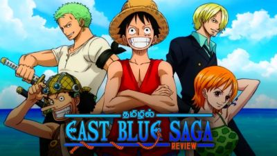
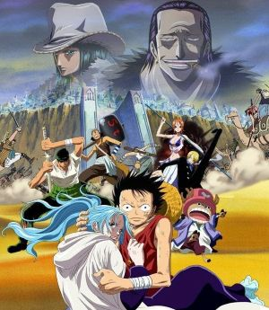
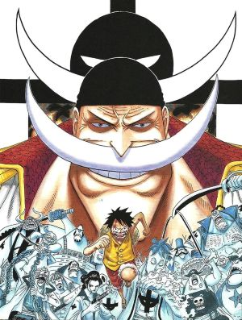
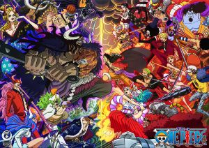

Important Story Arcs
One Piece has many famous arcs. Each one introduces new places, battles, and emotional moments for the crew.

East Blue Arc
This is where Luffy begins his journey and starts gathering his first crew members.

Alabasta Arc
The Straw Hats help Princess Vivi save her kingdom from danger and rebellion.

Marineford Arc
This is one of the most emotional arcs in the story and includes a huge war.

Wano Arc
In Wano, the Straw Hats fight powerful enemies and help free the land from oppression.